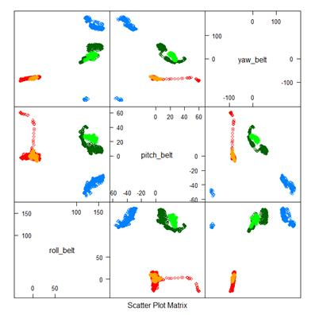

Practical Machine Learning Course Project
Introduction
The purpose of this paper is to describe the process and result for building a model to predict the classification of the correctness of an individual performing a Unilateral Dumbbell Biceps Curl using 3 dimensional accelerometer, gyroscope, and magnetometer data taken from the arms, forearms, belt, and dumbbells of the participants. Five different classifications are considered, "Exactly according to the specification (Class A), throwing the elbows to the front (Class B), lifting the dumbbell only halfway (Class C), lowering the dumbbell only halfway (Class D) and throwing the hips to the front (Class E)."1 All of the data used and descriptions were taken from Velloso et. al. This paper will describe the process of generating the model, the cross validation performed, and the expected out of sample error.
Building the Model
Two datasets were available for this project:
1. "pml-training.csv" – A set of training data for use in creating the model
2. "pml-testing.csv" – A set of 20 data points for which the classification must be determined without knowledge of the correct classification.
The first thing to consider when creating a model for this data is to ask the right question for the purpose of the model. The true purpose of this model is to predict the correct classification of the "pml-testing.csv" using the quantitative data in "pml-training.csv" for development the model. Aside from this, the secondary goal is to try to reproduce the results of the original creators of the data, which was to determine if quantitative data could be used to predict the correctness of the exercise.
The second thing that must be scrutinized is the data being used. The most important aspect of the data to acknowledge is that it is all from the same source. Regardless of what the dataset is called, it was all taken from the same individuals, under the same conditions, continually over a short time. Thus, the input data is the ideal training data that could be used to predict the result of the "pml-testing.csv." In addition, the creators of the dataset also included several statistically derived variables, subsampling the data points over time, in the dataset for their prediction purposes. These are of no use for the purpose of this project as the "pml-testing.csv" data are all discrete single time points.
With these premises acknowledged, we can move into the identification of features in the data for the purpose of prediction of the classification. Two subsets of the "pml-training.csv" data were created, 60% for training and 40% for testing per the standard rule of thumb. However, upon executing the following feature plot there is a clear problem with feature identification:
featurePlot(x=trainSub[,c("roll_belt","pitch_belt","yaw_belt")],
+ y=trainSub$user_name,
+ plot="pairs")

Figure 1: Feature plot of belt accelerometer data colored by user.
As seen in Figure 1, the accelerometer data and features appear to be heavily dependent on the user. This can be seen more clearly in Figure 2 and Figure 3 qplots below.

Figure 2: pitch_belt vs. roll_belt, colored by classe

Figure 3: pitch_belt vs. roll_belt, colored by user_name
What initially look like features for class identification are actually heavily dependent on the user_name. It would be very difficult to manually try to identify features for each user and create basic models for each of them. Thus, at this point it is best to skip simple feature identification and modeling and jump to the more complex types of modeling. A random forest model was chosen since they are highly accurate and the negative aspects of slow speed, poor interpretability, and overfitting do not apply for the purpose of this model.
When applying this model with all of the statistically derived variables removed an odd result was produced. When it was applied to the "pml-testing.csv" it classified all of the cases as "A". Upon closer inspection of the trees produced, covariate #1 was used in the tree. This covariate is actually just a row index number which logically should not be included in the random forest. However, in this case, the problem was not that the row indexes were included in the model, it was that the "pml-testing.csv" row indexes were false data with respect to the complete original set of data (the row numbers were renumbered when making "pml-testing.csv"). Removing this row number column from the random forest model produced correct prediction results for all of the "pml-testing.csv" cases and a 99.8% accuracy on the training data.
Cross Validation
Since a random forest model subsamples the training data and covariates several times and averages the results of the multiple trees produced, it is essentially is doing a form of cross validation. Having achieved the primary goal of the model to be able to predict the classifications of the "pml-testing.csv" cases, there was no need to do cross validation for this purpose. However, for the secondary purpose of trying to determine the applicability of this model to predicting the correctness of an exercise for any user, one of the users (carlitos) was removed (leave one out) from the training dataset, as well as the time type covariates, and the random forest was regenerated. By doing this, 18/20 of the "pml-testing.csv" cases passed, but only 2/4 for the carlitos data. In addition, an overall accuracy of 90.8% on the testing 40% of the training data was produced, but for only the carlitos data, an accuracy of 43.8% was produced.
Out of Sample Error
As described the Cross Validation section, the approximate overall out of sample error is 56.2% (1 - 43.8%), which is not suitable for application to new users. The original creators of the dataset and study also came to the conclusion that a greater number of users' data would be necessary to create a model that would be able to produce accurate results for a completely new user. However, this doesn't matter at all for the primary purpose of this model since all of the data in "pml-testing.csv" is nearly identical to the form of the data in the training set. Thus the 99.8% accuracy holds for the most part in this case.
Conclusion
The primary and secondary goals of this project have been achieved. A high accuracy random forest model was created that correctly classified all of the test cases in "pml-testing.csv." The model was also determined to be unsuitable for use on new users (requires more user data to be more accurate), as was also the conclusion of the original creators of the dataset. Cross validation, out of sample error, and the model construction decision process were also addressed.
References
The data for this project come from this source: http://groupware.les.inf.puc-rio.br/har
Velloso, E.; Bulling, A.; Gellersen, H.; Ugulino, W.; Fuks, H. Qualitative Activity Recognition of Weight Lifting Exercises. Proceedings of 4th International Conference in Cooperation with SIGCHI (Augmented Human '13) . Stuttgart, Germany: ACM SIGCHI, 2013.